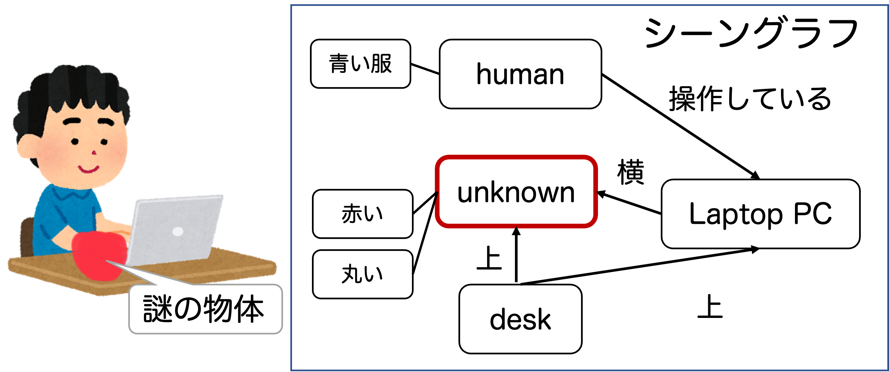

未知物体・未知事象の認識と記述
概要
人間は，知らない物体を見たとき，それが何かわからなくても何らかの物体であると認識できますが，ロボットは物体検出器が学習した物体しか検出できません．そこで，未学習の物体を未学習であると認識するOpen-set認識，及び新しい語彙で指定された対象を認識するOpen-vocabulary認識のタスクに取り組んでいます．また，物体だけでなく，行動など様々な未知事象に関する認識研究に対象を広げています．（この研究は日本学術振興会 科研費 基盤B 「拡張時空間シーングラフによる未知物体を含むシーン認識・記述基盤の構築」，科研費 基盤A 「能動的Open-world認識による知識拡張・環境認識基盤の構築」の支援を受けています．）
代表的な研究
- M. Sonogashira et al., Relationship-Aware Unknown Object Detection for Open-Set Scene Graph Generation, IEEE Access, 2024.
- T. T. Nguyen et al., One-stage open-vocabulary temporal action detection leveraging temporal multi-scale and action label features, FG2024.
- T. T. Nguyen et al., Zero-Shot Pill-Prescription Matching With Graph Convolutional Network and Contrastive Learning, IEEE Access, 2024.
- 薗頭ら，Open-setシーングラフ生成のための物体間の関係を考慮した未知物体検出, MIRU2023.
- M. Sonogashira & Y. Kawanishi, Towards Open-Set Scene Graph Generation with Unknown Objects, IEEE Access, 2022.